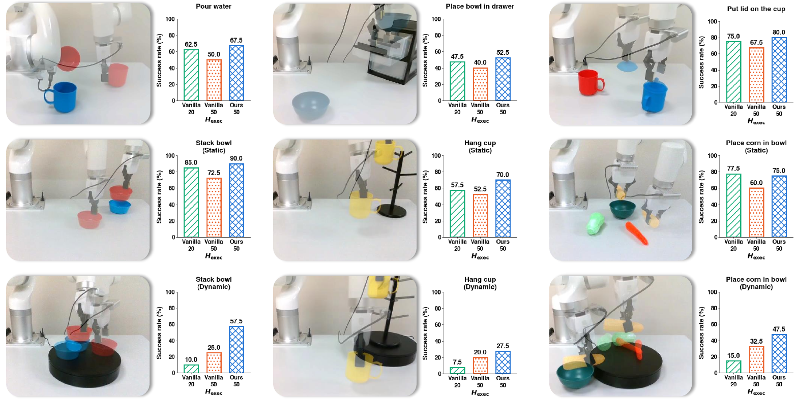

Staircase Policy: Streaming Inference
for World-Action Models
with Large Action Chunks

Abstract
World-Action Models (WAMs) improve robotic manipulation by conditioning action generation on predicted future observations, but future prediction adds further inference overhead to already expensive iterative action generation. Action chunking can amortize this cost over multiple actions, yet performance degrades over long execution horizons because later actions remain conditioned on stale observations.
We introduce Staircase Policy, a streaming inference and training framework that turns a flow-matching VLA into a JEPA-style WAM and partitions a large action chunk into sub-chunks at staggered denoising stages. Near-term actions are executed as soon as they become available, while later actions continue to be refined. At each sub-chunk boundary, the future latent is re-predicted from the latest observation and used to update all unexecuted actions, enabling long-horizon execution without repeated full policy inference. The resulting future-prediction error can further serve as a signal for adaptive chunking.
Method

Staircase Policy adds a lightweight future predictor to a flow-matching VLA: a frozen vision encoder gives h = E(o), and a decoder g predicts the feature map of a near-future observation. The action expert is conditioned on the current observation, the predicted future latent, and the cached semantic context. Two properties of long-horizon action generation motivate the design.
1. Denoising requirements vary across the action horizon
Near-term actions are easier to predict than actions farther into the future. Because flow-matching trajectories are approximately straight, a single velocity evaluation already gives a useful estimate toward the data endpoint. We therefore partition the chunk into K sub-chunks of size G (H = KG; we use H=50, K=5, G=10), emit the first sub-chunk after one denoising step, and give each subsequent sub-chunk one step more. All buffer positions stay at the same flow time, so the expert always sees the shared-τ distribution it was trained on.
2. Visual conditioning should be refreshed during execution
Object poses, contacts and robot configuration change during execution, while the instruction and high-level semantics stay fixed within a chunk. We therefore refresh only the lightweight vision-side future predictor at each sub-chunk boundary and reuse the cached vision-language context: the expensive backbone runs one forward pass per chunk, the predictor once per boundary at millisecond-scale cost. Each refreshed condition is applied to all unexecuted positions, so a change observed mid-chunk influences every later action without a full replan.
Training under the deployment schedule
Standard training never exposes the policy to partially denoised buffers, one-step readouts, mid-chunk changes in conditioning, or self-predicted future latents. We therefore train under the same streaming schedule used at deployment, supervising the readout the controller actually consumes rather than the velocity.
Future-prediction error as a chunking signal
Because the refresh runs as a chain, every boundary yields a prediction–realization pair that a policy denoising the chunk only once never has. The discrepancy grows when the scene departs from what the model anticipated, so thresholding it makes the executed horizon data-dependent rather than fixed at K sub-chunks.
Experiments
We evaluate on three simulation benchmarks: LIBERO (four suites of ten tasks), LIBERO-Plus (seven perturbation categories over the same tasks), and DOMINO (dynamic manipulation with scene changes during execution), plus nine real-robot tasks. Unless otherwise specified the base VLA is a 2.3B latent World-Action Model. Within each backbone, S-WAM and the vanilla baseline use the same data, initialization and training configuration. For every 50 executed actions, S-WAM with K=5 and vanilla execution at Hexec=50 both require five denoiser passes and one backbone pass, so Hexec=50 is the compute-matched baseline and Hexec=10 the conventional short-horizon baseline.
Real-robot experiments
Nine tasks on a UFACTORY xArm 850 with the policy running onboard an NVIDIA Jetson Thor, 30 teleoperated demonstrations per task collected with a Meta Quest 3, and 40 evaluation trials each. Six of the nine are static and dynamic versions of three manipulation skills, counted separately; in the dynamic version the target objects move continuously on a rotating turntable. The remaining three cover sustained, precise, and multi-stage manipulation.

On the six static tasks S-WAM reaches 72.5 success, compared with 67.5 for vanilla at Hexec=20 and 57.1 at Hexec=50; the drop at 50 reflects the limitation of vanilla large-chunk execution over long horizons. The dynamic tasks expose the limitations of both vanilla regimes. Frequent replanning is affected by inference latency while the scene continues to move, yielding only 10.8 at Hexec=20. Executing 50 actions per query improves this to 25.8, but later actions accumulate prediction drift over the long execution horizon. S-WAM instead updates the unexecuted actions from new observations and reaches 44.2.
Robustness on LIBERO-Plus
Success rate (%) across seven perturbation dimensions. S-WAM achieves the best average, 87.9%, outperforming the compute-matched vanilla baseline by 17.3 points. Robot initial-state perturbation is where that baseline is weakest (49.7); S-WAM reaches 76.0 there, the best score in the table, consistent with the benefit coming from re-observing scene geometry during execution.
| Method | Background | Robot | Camera | Language | Noise | Layout | Light | Avg. |
|---|---|---|---|---|---|---|---|---|
| ST-WAM | 74.2 | 60.1 | 55.4 | 79.3 | 79.5 | 74.3 | 93.0 | 73.7 |
| DreamWAM | 71.5 | 63.6 | 53.7 | 94.8 | 67.1 | 80.7 | 96.6 | 75.4 |
| VLA-JEPA | 93.6 | 67.1 | 63.3 | 85.4 | 66.3 | 85.1 | 95.6 | 79.5 |
| ROCKET-VLA | 91.8 | 41.8 | 91.8 | 78.0 | 92.5 | 81.2 | 94.7 | 81.7 |
| VLANeXt | 82.5 | 65.7 | 90.4 | 81.8 | 94.1 | 80.8 | 95.9 | 84.5 |
| WorldPilot | 96.4 | 60.6 | 82.8 | 87.2 | 93.6 | 80.5 | 98.6 | 85.7 |
| InternVLA-A1.5 | 98.2 | 55.1 | 83.1 | 86.9 | 95.6 | 85.2 | 96.4 | 85.8 |
| Vanilla, Hexec=50 | 83.0 | 49.7 | 77.1 | 53.9 | 80.0 | 64.8 | 85.7 | 70.6 |
| Vanilla, Hexec=10 | 95.2 | 73.4 | 91.5 | 77.7 | 94.3 | 82.1 | 96.0 | 87.2 |
| S-WAM (ours), Hexec=50 | 96.6 | 76.0 | 89.5 | 85.2 | 90.4 | 79.3 | 98.6 | 87.9 |
Training efficiency

Training under the streaming schedule is more expensive per step, but converges substantially faster. Across five global batch sizes, S-WAM consistently reaches higher success with fewer training steps, with the largest gains in low-batch regimes. At batch size 4 it reaches 72.5 success after 10k steps, compared with 32.2 for vanilla even after 25k steps; the gap narrows to 14.3 points at batch size 64. Although each streaming-training step costs 1.87× more FLOPs, the shorter schedule more than offsets this overhead — S-WAM ends at a higher success rate than vanilla while spending fewer total training FLOPs.
Inference speed
Optimization ladder on the LaWAM host. Eager is standard PyTorch execution; CUDA Graph captures the geometry and denoising calls to reduce launch overhead; prompt cache reuses the frame-invariant prompt computation. Neither optimization changes the actions produced.
| Method | Action/s ↑ | Speedup | TTFA (ms) ↓ |
|---|---|---|---|
| Vanilla (Hexec=10), eager | 80.9 ± 1.0 | 1.00× | 123.6 |
| Vanilla (Hexec=50), eager | 402.5 ± 6.8 | 4.98× | 124.2 |
| Ours (Hexec=50), eager | 292.7 ± 9.4 | 3.62× | 73.3 |
| + geo & DiT CUDA Graph | 625.7 ± 16.1 | 7.73× | 53.2 |
| + prompt cache | 642.9 ± 18.2 | 7.95× | 48.6 |
Against the vanilla policy at the execution horizon that matches its accuracy (Hexec=10), S-WAM raises throughput from 80.9 to 292.7 executed actions per second (3.62×) and cuts time-to-first-action from 123.6 to 73.3 ms (−40.7%). Adding graph capture and prompt caching takes the same policy to 642.9 actions per second at 48.6 ms.
Analysis
Execution length and the speed–accuracy trade-off

Increasing throughput by executing more actions per inference substantially degrades conventional policies. With only Hexec varied, our backbone drops from 95.2 at Hexec=10 to 82.4 at 50, while π0.5 drops from 93.2 to 66.4. In contrast, S-WAM executes the full 50-action chunk and still reaches 97.7 and 96.5 on the two backbones, above the best vanilla result on either. The throughput improvement therefore does not come from sacrificing task performance: the main limitation lies in executing later actions under stale conditioning, rather than in the chunk length itself.
Choice of denoising steps and sub-chunk size

The total chunk length is determined by the number of denoising steps K and the sub-chunk size G, the number of actions emitted per step; increasing either increases the executed horizon and thus throughput. Varying each factor independently, performance remains stable over a broad range and degrades only when the chunk becomes too long relative to the available denoising steps. We therefore use K=5 and G=10, a 50-action chunk, for all experiments unless otherwise specified.
Small models vs. execution-level acceleration

We compare against three compact policies — TurboVLA (0.2B), VLA-Adapter (0.6B) and Evo-1 (0.77B) — relative to our 2.3B backbone. On LIBERO the compact models already perform strongly, but the gap widens on harder benchmarks: they reach 66.9–76.5% on LIBERO-Plus versus 87.9% for ours, and 0.9–5.3% on DOMINO, where S-WAM reaches 19.3%. These are two complementary paths to efficient policy inference — reducing model size, which works well on relatively easier settings, and execution-level acceleration, which preserves the capacity of a larger policy.
Future-prediction error as an adaptive-chunking signal

Commit-X always executes exactly X sub-chunks before replanning. pX instead sets the gating threshold to the X-th percentile of the future-prediction error measured on the validation set and replans when the error exceeds it, while committing to at least four sub-chunks. Adaptive chunking provides an additional operating point between commit-4 and commit-5, trading a small amount of throughput for a larger gain in success: p80 reaches 96.2 success with only a modest further reduction in throughput.
Transferability across policy backbones
S-WAM transfers across backbones. Each backbone retains its host-specific training configuration, while the schedule, objectives and method-side hyper-parameters remain unchanged. Act/s is executed actions per second; TTFA is time to first action (ms). Notably, π0.5 and FLOWER were not pretrained to predict future latents.
| Backbone | Policy | Spatial | Object | Goal | Long | Avg. | Act/s ↑ | TTFA ↓ |
|---|---|---|---|---|---|---|---|---|
| LaWAM (2.3B) | S-WAM | 98.6 | 100.0 | 97.0 | 95.0 | 97.65 | 292.7 | 73.3 |
| Vanilla, Hexec=10 | 96.2 | 98.4 | 95.6 | 90.6 | 95.20 | 80.9 | 123.6 | |
| Vanilla, Hexec=50 | 87.2 | 80.6 | 88.0 | 73.8 | 82.40 | 402.5 | 124.2 | |
| π0.5 (3.5B) | S-WAM | 98.0 | 98.6 | 95.2 | 94.2 | 96.50 | 243.2 | 80.6 |
| Vanilla, Hexec=10 | 94.6 | 99.0 | 91.6 | 87.4 | 93.15 | 75.7 | 132.2 | |
| Vanilla, Hexec=50 | 66.4 | 67.6 | 72.8 | 58.6 | 66.35 | 378.3 | 134.8 | |
| FLOWER (1.0B) | S-WAM | 97.4 | 99.6 | 98.6 | 88.8 | 96.10 | 234.3 | 72.7 |
| Vanilla, Hexec=10 | 98.8 | 99.2 | 96.6 | 89.6 | 96.05 | 85.5 | 117.0 | |
| Vanilla, Hexec=50 | 85.6 | 85.0 | 90.6 | 67.0 | 82.05 | 416.0 | 120.2 |
Compared with vanilla execution at Hexec=50, S-WAM improves success by 15.25, 30.15 and 14.05 points on LaWAM, π0.5 and FLOWER respectively. Across all three backbones it achieves comparable or better success than vanilla execution at Hexec=10, while improving throughput by 2.74×–3.62× and reducing TTFA by 37.9%–40.7%.
BibTeX
@article{sun2026staircase,
title = {Staircase Policy: Streaming Inference for World-Action Models
with Large Action Chunks},
author = {Sun, Guoheng and Chen, Chen and Wang, Jin and Li, Ang
and Lv, Teresa},
journal = {arXiv preprint},
year = {2026}
}